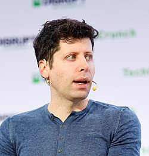
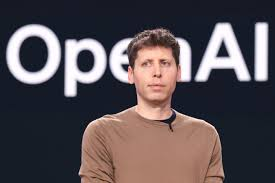

Samuel Harris Altman (Chicago, Illinois; 22 de abril de 1985), conocido como Sam Altman, es un empresario, inversionista, programador y bloguero estadounidense.[2] Es director ejecutivo de OpenAI y expresidente de Y Combinator, y se le considera una de las figuras principales en el desarrollo de la inteligencia artificial.[3][4][5][6] Su patrimonio neto actual es de 2100 millones de dólares, de acuerdo con Forbes.[7

Fue director ejecutivo de Reddit durante ocho días en 2014 después de la renuncia del director ejecutivo Yishan Wong.[30] Anunció el regreso de Steve Huffman como director ejecutivo el 10 de julio de 2015.[31